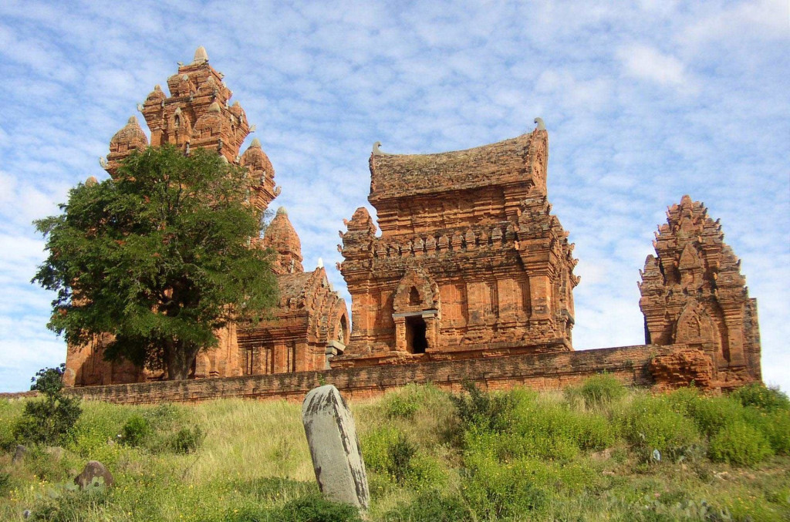

อาณาจักรจามปา

จามปา (อักษรโรมัน: Champa; เวียดนาม: Chăm Pa) เป็นกลุ่มรัฐอิสระของชาวจาม (Cham) ที่ตั้งอยู่ทั่วชายฝั่งซึ่งปัจจุบันคือภาคกลางและภาคใต้ของประเทศเวียดนามดำรงอยู่ตั้งแต่ราวคริสต์ศตวรรษที่ 2 จนถูกจักรพรรดิมิญ หมั่ง (Minh Mạng) ผนวกเข้ากับเวียดนามเมื่อ ค.ศ. 1832[1] ในภูมิภาคนี้ รัฐหลินอี้ (จีน: 林邑; เวียดนาม: Lâm Ấp) ซึ่งตั้งขึ้นเมื่อ ค.ศ. 192 ดำรงอยู่มาก่อนรัฐจามปา แต่ความเกี่ยวเนื่องระหว่างหลินอี้กับจามปานั้นยังไม่อาจระบุให้ชัดแจ้งได้ รัฐจามปารุ่งเรืองถึงขีดสุดในช่วงคริสต์ศตวรรษที่ 9 และ 10 แต่หลังจากนั้นก็เริ่มตกต่ำเพราะถูกกดดันจากรัฐดั่ยเหวียต (Đại Việt) ที่ตั้งอยู่ ณ ดินแดนซึ่งปัจจุบันคือห่าโหน่ย (Hà Nội) ครั้น ค.ศ. 1832 จักรพรรดิมิญ หมั่ง ผนวกแว่นแคว้นต่าง ๆ ของรัฐจามปาเข้ากับเวียดนามเป็นผลสำเร็จ เป็นอันสิ้นสุดรัฐจามปา